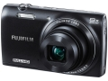

无忌
器材库
全部器材
产品年表
名词百科
榜单
器材库
> 不可换镜头数码相机 > FinePix JZ700

富士
FinePix JZ700
分类
不可换镜头数码相机
点评
0 条
图片
0 张
评测
0 篇
采用1400万像素1/2.3英寸CMOS，8倍光学变焦镜头，等效135画幅为24mm～192mm。机身背面搭载23万像素2.7英寸液晶显示屏。
产品类型
不可换镜头数码相机
综合评分
暂无评分
无忌评测
暂无评测
规格参数
网友点评
(0)
产品图 / 样片
(0)
评测文章
(0)
规格总览
发布日期
2013-01-08
影像规格
影像传感器
CMOS
影像传感器尺寸
1/2.3英寸
有效像素
1400万
静态图像尺寸
［L］＜4：3＞4288 × 3216 ／ ＜3：2＞4288 × 2864 ／ ＜16：9＞4288 × 2416
静态图像格式
JPEG
画幅比
3:2, 4:3, 16:9
短片尺寸
1920×1080分辨率30帧，1280×720分辨率60/30fps
短片格式
MPEG4-AVC/H.264
镜头和对焦
镜头结构
8片/8组
焦距
4.3mm-34.4mm
等效35mm画幅焦距
24mm-192mm
最大光圈
3.6-6.3
光学变焦
8倍
数码变焦
2倍
最近对焦距离
广角：40cm、远摄：100cm, 微距5cm
曝光控制
测光模式
多分区评价测光
曝光模式
P（程序自动曝光）
快门速度
8秒～1/2000秒
曝光补偿
±2EV以1/3EV级调整
ISO感光度
100, 200, 400, 800, 1600, 3200
白平衡
日光, 白炽灯, 阴天, 自动, 荧光灯（冷白色）, 荧光灯（日光）, 荧光灯（暖白色）
闪光灯
内置闪光灯
固定
闪光涵盖范围
［广角］約50cm～7.7m ［长焦］約90cm～4.1m
取景规格
LCD类型
TFT LCD
LCD尺寸
2.7英寸
LCD像素
23万
文件输入/输出
存储卡
SD/SDHC, SDXC
数据接口
USB2.0
视频/音频接口
HDMI Mini 输出
电源
电池
NP-45A或NP-45B
外观
颜色
黑色, 红色, 白色, 灰色
尺寸
99.4×57.0×22.6mm
重量
117g
该产品暂无存档的网友点评
该产品暂无存档的产品图
评测 / 相关文章
该产品暂无存档的评测文章
相关文章
［资讯］富士FinePix JZ700
（原站已下线）